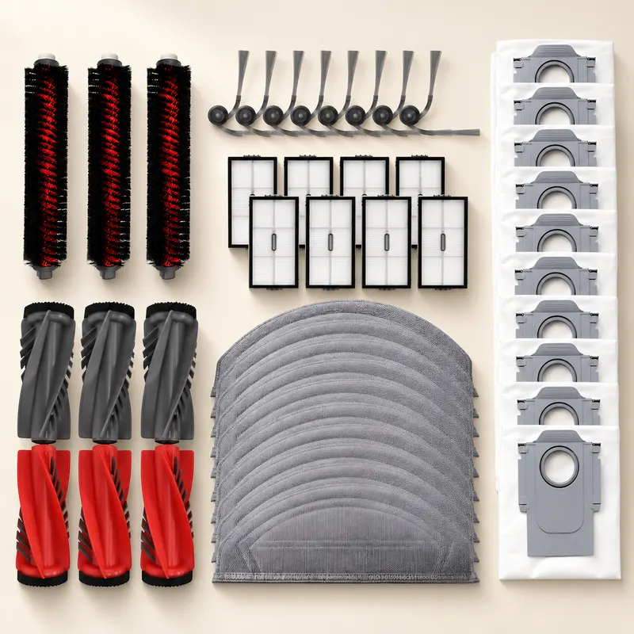

로보락 (Roborock)
로보락 S10 MaxV Ultra 세제 미포함 세트｜원목마루 브러시·걸레 실속 관리
글·구성: 제이상점 · 기종별 1:1 호환 실물 점검 · 교체 주기 비교표 · 스마트스토어 패키지 안내

핵심 관리 · 선택 체크포인트
- 강마루나 헤링본 원목마루가 깔린 거실에서는 브러시에 작은 모래 알갱이가 끼거나 물걸레 패드가 납작해진 상태로 반복 주행하면 바닥 결에 잔흠집이나 칙칙한 물자국이 남기 쉽습니다.
- 원목·강마루 결을 지키는 듀오디바이드 브러시와 2발 사이드브러시 체결 디테일: 로보락 S10 MaxV Ultra(Saros Z70 호환)는 적·흑 원추형 듀오디바이드 브러시가 중앙으로 머리카락과 미세 모래를 끌어모으고, 곡선형 2발 사이드브러시가 걸레받이 모서리 먼지를 쓸어 넣는 구조입니다.
- 원목·강마루 환경 S10 MaxV Ultra 5종 소모품 규격·교체 신호표: 세정제를 제외한 5종 핵심 소모품의 고유 체결 형상과 마루 바닥 보호를 위한 교체 시점을 아래 표로 정리했습니다.
- 세제 보유 가정의 3개월·6개월·1년 세제 미포함 옵션 손익 선택 설계: 제이상점 로보락 S10 MaxV Ultra 세제 미포함 페이지는 3개월 세트(세제 미포함), 6개월 세트(세제 미포함), 1년 세트(세제 미포함) 세 가지 기간 옵션으로 깔끔하게 나뉘어 있습니다.
- 반면 원목·강마루 거실과 주방을 매일 예약 청소하는 가정이라면 1년 세트(세제 미포함)로 브러시·걸레·필터·더스트백 5종을 한 번에 비축해 두는 편이 회당 단가와 배송 대기 번거로움을 가장 크게 줄여 줍니다.
실물 부품 디테일 · 관리 구성 이미지


부품 규격 · 점검 기준표
| 부품 구분 | S10 MaxV Ultra 1:1 규격 특징 | 원목·강마루 교체·점검 신호 |
|---|---|---|
| 듀오디바이드·2발 사이드브러시 | 적·흑 원추형 브러시 1쌍 + 곡선형 2발 사이드브러시 | 고무 날개 찢어짐·가닥 휨 시 선흡입 저하로 즉시 교체 |
| 반원형 메인·원형 미니 걸레 | 진동형 반원형 메인 패드 + 스윙 원형 미니 패드 | 극세사 파일이 납작해지거나 마루 물자국이 남으면 동시 교대 |
| 중앙 세로탭 필터·회색 더스트백 | 블랙 프레임 중앙 세로탭 필터 + 회색 슬라이딩 칼라 | 필터 주름 변색·흡입 소음 증가 시 24시간 건조 여분과 교대 |
💡 교체 주기가 겹치는 필터·브러시·물걸레·더스트백은 단품 배송비를 여러 번 내기보다 로보락 S10 MaxV Ultra 기간별 세트(3개월·6개월·1년)로 미리 구비해 두면 물세척 후 24시간 교대 건조까지 끊김 없이 관리할 수 있습니다.
자주 묻는 질문 (FAQ)
Q. 강마루·원목마루에서 로봇청소기를 매일 돌릴 때 브러시와 걸레는 어떤 순서로 점검해야 바닥 흠집을 줄일 수 있나요?
A. 주 1회 본체를 뒤집어 적·흑 듀오디바이드 브러시 홈과 곡선형 2발 사이드브러시에 모래 알갱이나 단단한 이물질이 끼지 않았는지 먼저 털어 주세요. 세척한 반원형 메인·원형 미니 걸레는 베란다 매트에서 완전히 말린 예비 패드와 교대 장착하고, 물세척한 중앙 세로탭 필터는 최소 24시간 완전 건조 후 장착해야 선흡입 풍량이 유지되어 마루 잔모래를 먼저 깔끔하게 빨아들일 수 있습니다.
Q. 로보락 S10 MaxV Ultra 세제 미포함 세트의 듀오디바이드·2발 사이드브러시 규격과 관리 기준은 무엇인가요?
A. 적·흑 원추형 브러시 1쌍 + 곡선형 2발 사이드브러시 규격을 사용하며, 고무 날개 찢어짐·가닥 휨 시 선흡입 저하로 즉시 교체 기준으로 점검·교체하면 청소 효율을 안정적으로 유지할 수 있습니다.
Q. 로보락 S10 MaxV Ultra 세제 미포함 세트의 반원형 메인·원형 미니 걸레 규격과 관리 기준은 무엇인가요?
A. 진동형 반원형 메인 패드 + 스윙 원형 미니 패드 규격을 사용하며, 극세사 파일이 납작해지거나 마루 물자국이 남으면 동시 교대 기준으로 점검·교체하면 청소 효율을 안정적으로 유지할 수 있습니다.
제이상점 1:1 검수 추천 패키지 · 구매 안내
![[정품] 로보락 세제 전용 세정제 세정액 클리너 소모품 S10 S9 S8](../../assets/img/roborock-cleaner-product-eec13fec.webp)
함께 많이 찾는 보충 구성
용량 1L-1병용량 1L-2병(복수구매할인)
☑️ 주문 전 확인해 두면 좋은 제이상점 안심 포인트
· 기종별 1:1 전용 규격 검수: 모델명·연식에 맞는 호환·정품 구성을 검수해 오주문 불안을 줄였습니다.
· 해외직배송 미리 주문 팁: 중국 구매대행·해외직배송 상품이므로 마지막 여분 1개를 꺼내 쓰는 시점에 개인통관고유부호와 함께 여유 있게 주문해 두시면 훨씬 경제적인 비용으로 끊김 없이 교체하실 수 있습니다.
· 기종별 1:1 전용 규격 검수: 모델명·연식에 맞는 호환·정품 구성을 검수해 오주문 불안을 줄였습니다.
· 해외직배송 미리 주문 팁: 중국 구매대행·해외직배송 상품이므로 마지막 여분 1개를 꺼내 쓰는 시점에 개인통관고유부호와 함께 여유 있게 주문해 두시면 훨씬 경제적인 비용으로 끊김 없이 교체하실 수 있습니다.
📖 더 많은 가정 내 사용 스토리와 상세 후기가 궁금하시다면
📱 네이버 블로그 모바일 원문 보기 ↗